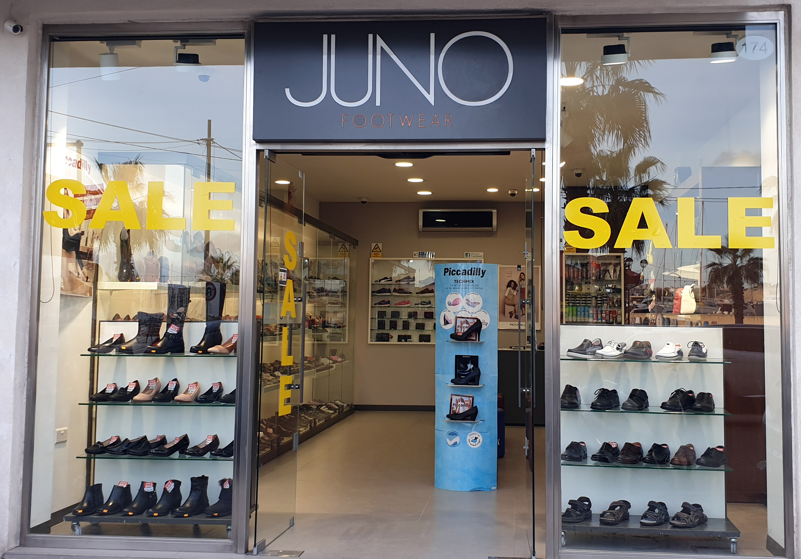
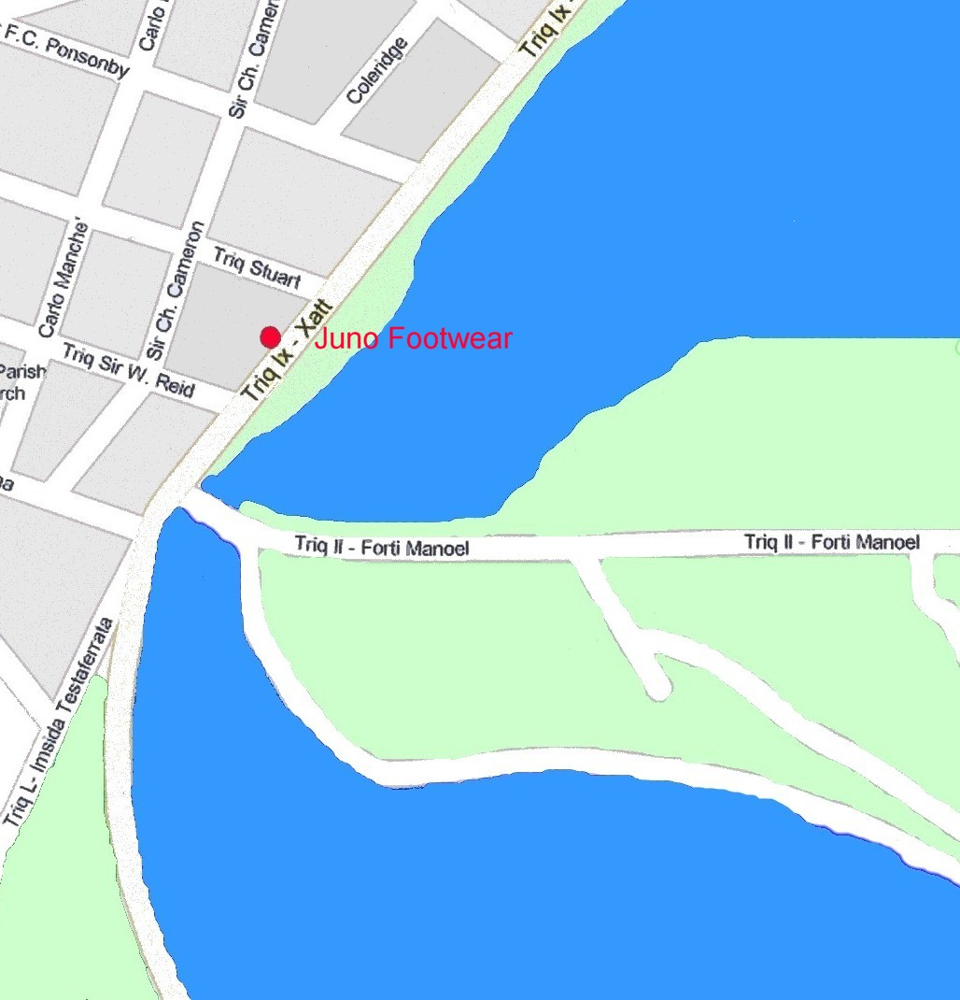

Juno Footwear is one of Malta’s leading shoe outlets. It was established in 1985 and is situated at 174, The Stand Gżira. We pride ourselves by offering our customers with quality footwear at reasonable prices and outstanding service.
At Juno Footwear you can find a collection of ladies, men’s and children’s shoes, sandals, boots, mules, slippers, beachwear, sport shoes, socks, handbags, purses, wallets and a vast variety of shoe care products. Some of the brands we stock include Sealine, Joma, Puma, Pegada, Piccadilly, Defonseca, Ascot, OrtoMed, Polyflex, Walk in the city, Happy steps, Bestseller, Kiwi, Punch, Woly and many more.
Our shop opening hours are Monday to Saturday from 9.30am to 1.30pm and 4.30pm to 7.30pm.